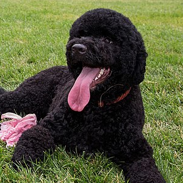
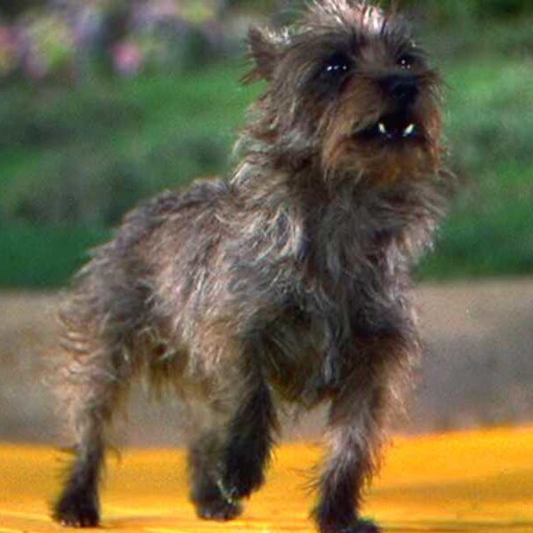
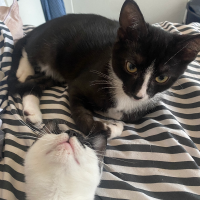

Ray's Dog

Damian's Dog

Aldo's Kittens

“The best bonds are built here”
We at E-Pet have been dedicated to the proccess of matching pet owners with shelter animals for over a decade. After going through the long and difficult adoption proccess with their pets, E-Pet founders Aldo, Damian, & Ray decided to build an online community to match animal lovers with shelter animals and streamline the adoption proccess. We care deeply about animals at E-Pet, and paperwork and long applications shouldn’t get in the way of our furry friends being matched with loving and safe homes. Our mission at E-Pet is to save as many animal lives as possible--and to spread as many resources and information about the adoption proccess and shelter animals as possible. We do this with our partner organizations and with guidelines from APSCA, to make sure we deliver our promise to our furry friends and you in an ethical, and efficient way.